Introduction
metabaR is an R package which supports the importing, handling and post-bioinformatics evaluation and improvement of metabarcoding data quality. It provides a suite of functions to identify and filter common molecular artifacts produced during the experimental workflow, from sampling to sequencing, ideally using experimental controls.
Due to its simple structure, metabaR can easily be used in combination with other R packages commonly used for ecological analysis (vegan, ade4, ape, picante, etc.). In addition, it provides flexible graphical systems based on ggplot2 to vizualise data from both an ecological and experimental perspective.
Dependencies and Installation
metabaR relies on basic R functions and data structures so as to maximise fexibility and transposability across other packages. It has a minimal number of dependencies to essential R packages :
-
ggplot2,cowplot, andigraphfor visualisation purposes -
reshape2for data manipulation purposes
-
veganandade4for basic data analyses
-
seqinrandbiomformatfor data import or formatting.
To install metabaR, use :
# install bioconductor dependencies
install.packages("BiocManager")
BiocManager::install("biomformat")
# install metabaR package
install.packages("remotes")
remotes::install_github("metabaRfactory/metabaR")And then load the package
Package overview
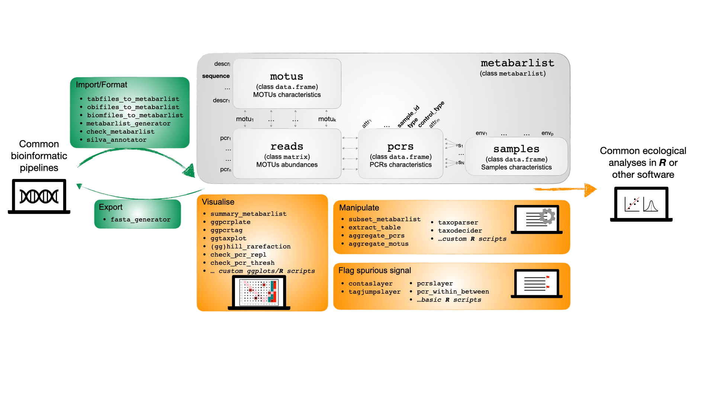
Data format and structure
The basic data format used in metabaR is a metabarlist, a list of four tables:
readsa table of classmatrixconsisting of PCRs as rows, and molecular operational taxonomic units (MOTUs) as columns. The number of reads for each MOTU in each PCR is given in each cell, with 0 corresponding to no reads.motusa table of classdata.framewhere MOTUs are listed as rows, and their attributes as columns. A mandatory field in this table is the field “sequence”, i.e. the DNA sequence representative of the MOTU. Examples of other attributes that can be included in this table are the MOTU taxonomic information, the taxonomic assignment scores, MOTU sequence GC content, MOTU total abundance in the dataset, etc.-
pcrsa table of classdata.frameconsisting of PCRs as rows, and PCR attributes as columns. This table is particularly important inmetabaR, as it contains all the information related to the extraction, PCR and sequencing protocols and design that are necessary to assess and improve the quality of metabarcoding data (Taberlet et al. 2018; Zinger et al. 2019). This table can also include information relating to the PCR design, such as the well coordinates and plate of each PCR, the tag combinations specific of the PCR, the primers used, etc. Mandatory fields are:-
sample_id: a vector indicating the biological sample origin of each PCR (e.g. the sample name) -
type: the type of PCR, either a sample or an experimental control amplification. Only two values allowed:"sample"or"control".
-
control_type: the type of control. Only five values are possible in this field:-
NAiftype="sample", i.e. for any PCR obtained from a biological sample.
-
"extraction"for DNA extraction negative controls, i.e. PCR amplification of an extraction where the DNA template was replaced by extraction buffer.
-
"pcr"for PCR negative controls, i.e. pcr amplification where the DNA template was replaced by PCR buffer or sterile water.
-
"sequencing"for sequencing negative controls, i.e. unused tag/library index combinations.
-
"positive"for DNA extraction or PCR positive controls, i.e. pcr amplifications of known biological samples or DNA template (e.g. a mock community).
-
-
samplesa table of classdata.frameconsisting of biological samples as rows, and associated information as columns. Such information includes e.g. geographic coordinates, abiotic parameters, experimental treatment, etc. This table does not include information on the DNA metabarcoding experimental controls, which can only be found inpcrs.
Function Types
metabaR provides a range of function types:
- Import and formating functions to import DNA metabarcoding data from common bioinformatic pipelines (e.g. OBITools, data in the biom format) or more generally from any data formatted as described above in 4 tables corresponding to the
reads,motus,pcrs,samples.
- Functions for data curation. These are often absent from most bioinformatic pipelines. They aim to detect and enable the tagging of potential molecular artifacts such as contaminants or failed PCR reactions.
- Functions for visualizing the data under both ecological (e.g. sample types similarity, rarefaction curves) and experimental (e.g. control types, distribution across the PCR plate design) perspectives.
- Functions to manipulate the
metabarlistobject, such as selection of a subset, data aggregation by PCRs or MOTUs, taxonomy information formatting, etc.
Example dataset
An example dataset is provided in metabaR to show how the package can be used to assess and improve data quality.
The soil_euk dataset is of class metabarlist. The data were obtained from an environmental DNA (eDNA) metabarcoding experiment aiming to assess the diversity of soil eukaryotes in French Guiana in two sites corresponding to two contrasting habitats:
- Mana, a site located in a white sand forest, characterised by highly oligotrophic soils and tree species adapted to the harsh local conditions.
- Petit Plateau, a site located in the pristine rainforest of the Nouragues natural reserve characterised by terra firme soils richer in clay and organic matter.
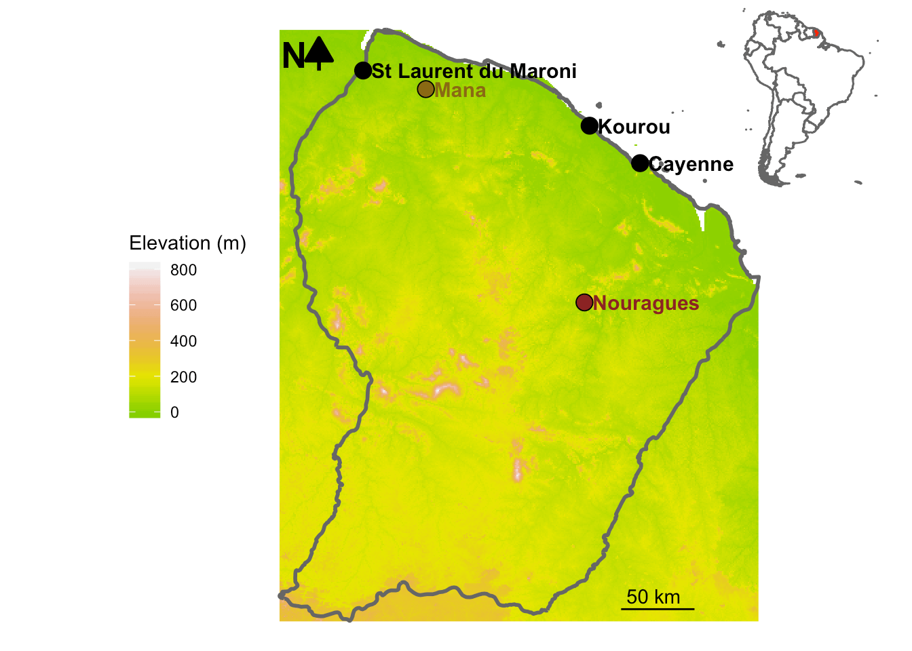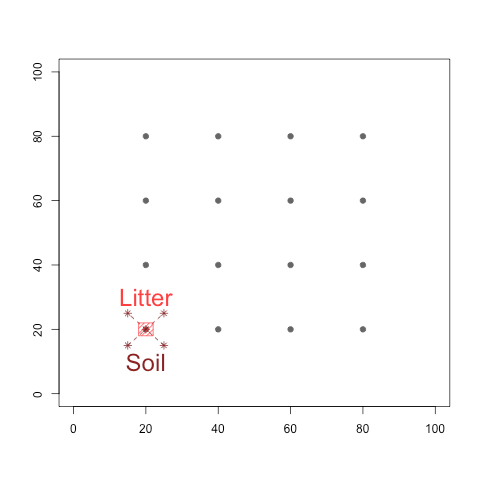
At each site, both soil and litter samples were collected so as to assess if these two types of material differ in their eukaryotic communities (Figure 2b). The total experiment consists of 384 PCR products, including 256 PCR products obtained from biological samples, the rest corresponding to various experimental controls. The retrieved data were then processed using the OBITools (Boyer et al. 2016) and SUMACLUST (Mercier et al. 2013) packages, as well as the SILVAngs pipeline (Quast et al. 2013).
More information on the soil_euk dataset can be found in its help page:
?soil_eukThe example dataset is loaded in R as follows:
data(soil_euk)
summary_metabarlist(soil_euk)
#> $dataset_dimension
#> n_row n_col
#> reads 384 12647
#> motus 12647 15
#> pcrs 384 11
#> samples 64 8
#>
#> $dataset_statistics
#> nb_reads nb_motus avg_reads sd_reads avg_motus sd_motus
#> pcrs 3538913 12647 9215.919 10283.45 333.6849 295.440
#> samples 2797294 12382 10926.930 10346.66 489.5117 239.685The summary_metabarlist function displays the dataset dimensions and characteristics. The above shows that the soil_euk dataset is composed of 12647 eukaryote MOTUs from 384 pcrs, corresponding to a total of 64 soil cores plus the different experimental controls (object soil_euk$dataset_dimension). The total number of MOTUs and reads differ between the lines pcrs and samples in the soil_euk$dataset_statistics object because PCRs products (hereafter referred to as pcrs) include experimental positive and negative controls besides biological samples (hereafter referred to as samples).
The soil_euk dataset also contains information relative to MOTUs (15 variables in the motus table), PCRs (11 variables in the pcrs table), and samples (8 variables in the samples table).
Such information can be observed with basic R commands, given that the metabarlist object is a simple R list:
colnames(soil_euk$pcrs)
#> [1] "plate_no" "plate_col" "plate_row" "tag_fwd" "tag_rev"
#> [6] "primer_fwd" "primer_rev" "project" "sample_id" "type"
#> [11] "control_type"In soil_euk$pcrs these columns correspond to:
-
"plate_no": the PCR plate number in which each pcr has been conducted.
-
"plate_col"and"plate_row": the well coordinate (i.e. column and row) corresponding to where each pcr has been conducted.
-
"tag_fwd"and"tag_rev": the forward and reverse nucleotide tag/indices used to differenciate each pcr.
-
"primer_fwd"and"primer_rev": the forward and reverse primers used.
-
"project": the experiment project name. -
"sample_id","type","control_type": the mandatory fields for thepcrstable as described above.
colnames(soil_euk$samples)
#> [1] "site_id" "point_id" "Latitude"
#> [4] "Longitude" "Code.Petit.Plateau" "Site"
#> [7] "Habitat" "Material"In soil_euk$samples these columns correspond to:
-
"site_id"and"point_id": the identification codes for sites and sampling points respectively.
-
"Latitude"and"Longitude": the geographic coordinates of the sampling points (decimal degree).
-
"Code.Petit.Plateau": code specific to the experiment. Useful when several experiments are sequenced in the same library, but to not be considered in this tutorial.
-
"Site""Habitat": site name and corresponding habitat of each sample.
-
"Material": type of substrate material for each sample.
Tutorial with the soil_euk dataset
Below we provide a standard procedure for data analysis and curation with the metabaR package. Note however that not all functions provided in metabaR are indicated below, we encourage the user to explore the package further in order to tailor its use depending on your dataset characteristics.
Data import
metabaR provides import tools for different data formats. Let’s consider for example a suite of four classical “.txt” or csv files each corresponding to the future reads, motus, pcrs, and samples objects. These can be imported and formated into a metabarlist with the tabfiles_to_metabarlist function as follows:
soil_euk <- tabfiles_to_metabarlist(file_reads = "litiere_euk_reads.txt",
file_motus = "litiere_euk_motus.txt",
file_pcrs = "litiere_euk_pcrs.txt",
file_samples = "litiere_euk_samples.txt")The default field separator of input files is tabulation, but this can be modified by the user. The rows x columns of the input files should follow the format of the table reads, motus, pcrs, and samples described above. Note that in this example above, these input files are stored in the current working directory. If you want to use specifically these example files, we refer you to the tabfiles_to_metabarlist help page example.
Diagnostic Plots
Before processing the data, it is useful to begin the analysis with an explorative visualisation of the raw data, which can already highlight several potential problems.
Basic visualisation
An initial assessment consists in determining how many reads and MOTUs have been obtained across samples and control types, with the expectation that negative controls yield no or much lower read counts and MOTU numbers. To do so, one can either create new independent vectors storing the total number of reads and MOTUs in each pcr, or store these information in the table pcrs of the metabarlist directly, as done below:
# Compute the number of reads per pcr
soil_euk$pcrs$nb_reads <- rowSums(soil_euk$reads)
# Compute the number of motus per pcr
soil_euk$pcrs$nb_motus <- rowSums(soil_euk$reads>0)And then plot the results using the “control_type” column of the pcrs table
# Load requested package for plotting
library(ggplot2)
library(reshape2)
# Create an input table (named check1) for ggplot of 3 columns:
# (i) control type
# (ii) a vector indicated whether it corresponds to nb_reads or nb_motus,
# (iii) the corresponding values.
check1 <- melt(soil_euk$pcrs[,c("control_type", "nb_reads", "nb_motus")])
ggplot(data <- check1, aes(x=control_type, y=value, color=control_type)) +
geom_boxplot() + theme_bw() +
geom_jitter(alpha=0.2) +
scale_color_manual(values = c("brown", "red", "cyan4","pink"), na.value = "darkgrey") +
facet_wrap(~variable, scales = "free_y") +
theme(axis.text.x = element_text(angle=45, h=1))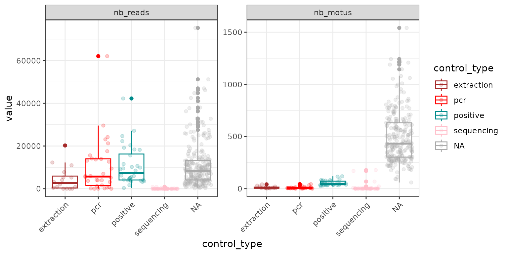
Remember that pcrs obtained from samples are referred to as NA in the control_type vector, shown in grey in the example above. Here, extraction and PCR negative controls yield a few MOTUs of non negligible abundance, which are likely contaminants. Not to worry for now, since this feature is common in DNA metabarcoding datasets (Taberlet et al. 2018; Zinger et al. 2019), and we will address with those below.
An other basic visualisation consists in determining how the number of MOTUs and reads correlate. This information can help identify the sequencing depth below which a pcr might not be reliable, in particular by comparison with the characteristics of experimental negative controls.
# Using the nb_reads and nb_motus defined previously in the soil_euk$pcrs table
ggplot(soil_euk$pcrs, aes(x=nb_reads, y=nb_motus, color = control_type)) +
geom_point() + theme_bw() +
scale_y_log10() + scale_x_log10() +
scale_color_manual(values = c("brown", "red", "cyan4","pink"), na.value = "darkgrey")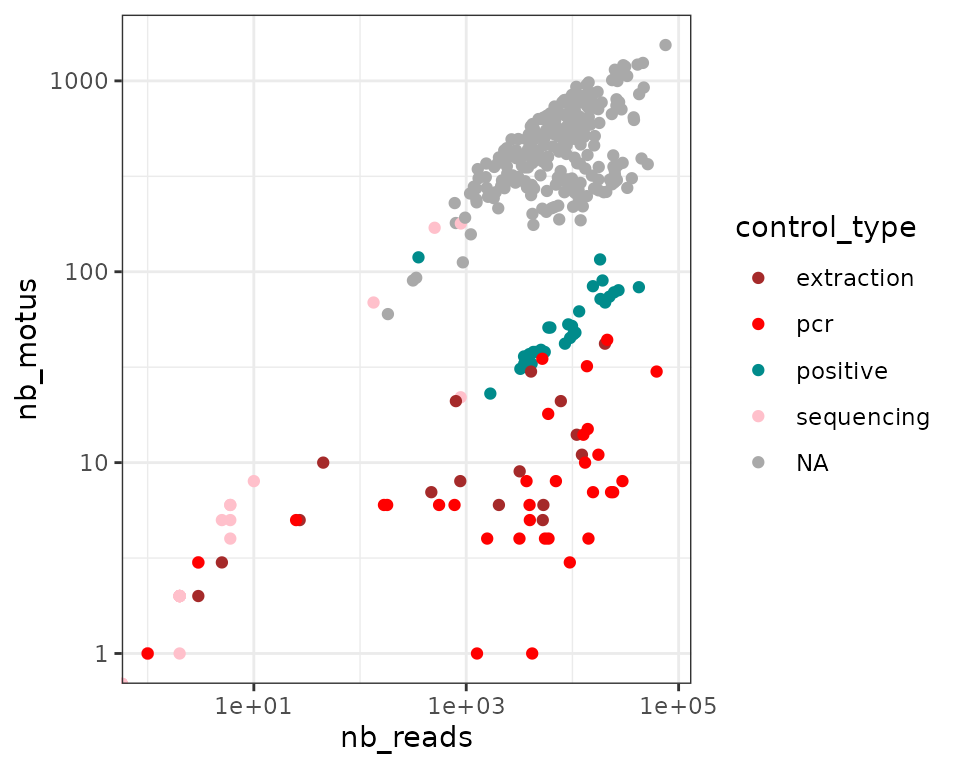
In general, we observe a positive correlation between the number of reads and MOTUs per pcr. The strength of this relationship for the different pcrs types (i.e. from samples or controls) can reveal important information about the dataset. A strong correlation suggests that the sequencing effort is not sufficient to cover the pcr diversity. In other words, the number of MOTUs increases linearly with the sequencing depth, which is not a desired property when working with diversity. On the contrary, an absence of correlation suggests that the diversity is well covered by sequencing. The latter is the case in our example above with extraction or pcr negative control pcrs harbouring high number of reads but low numbers of MOTUs: these are most likely contaminants. The read / MOTU number relationship is steepest for sequencing negative controls, which indicates that although tag-jumps do occur at low rates in the soil_euk dataset (low number of reads), it occurs for many MOTUs (Schnell, Bohmann, and Gilbert 2015). For pcrs obtained from samples, the number of reads and MOTUs is only slightly correlated. Of note is that some pcrs exhibit features more similar to controls and are likely failed.
Visualisation in the PCR design context
Another way to vizualise basic descriptive dataset statistics is to represent them in their experimental context. For example, one can plot the number of reads in the PCR plates if the PCR plate numbers and well coordinates have been provided in the pcrs table. Such visualisation can highlight potential issues at the PCR amplification step. For example, low read abundances in pcrs throughout one line or column of the PCR plate suggests that a primer was dysfunctional or that the pipetting of reagents was inconsistent. Let’s see how it appears for the soil_euk data:
ggpcrplate(soil_euk, FUN = function(m){rowSums(m$reads)}, legend_title = "# of reads per PCR")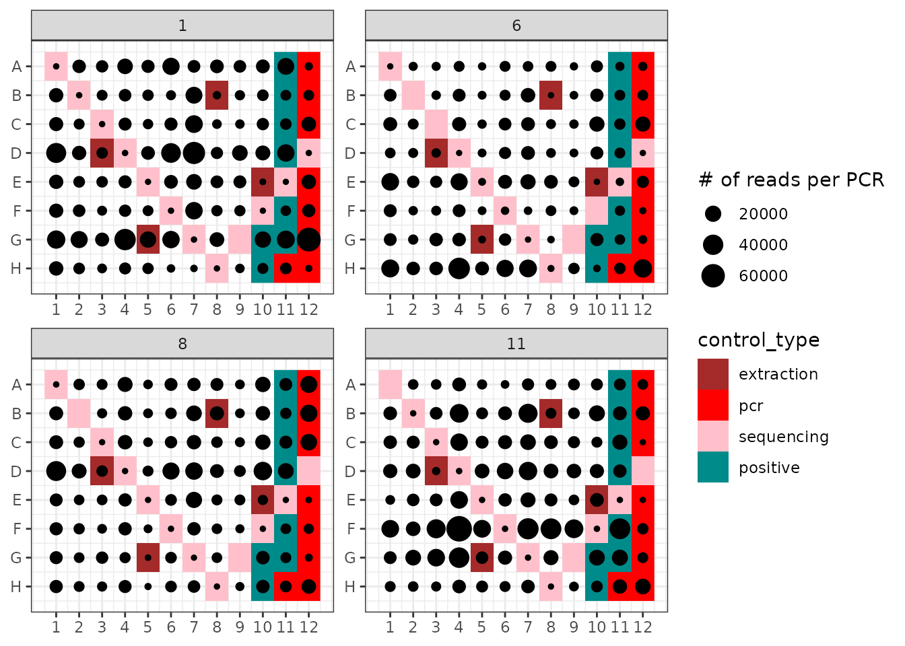
ggpcrplate uses a metabarlist and a custom function. In the example above, it computes the number of reads per pcr to display these in their experimental context. This operation is the default when using ggpcrplate, and can be obtained with the bfollowing asic call:
ggpcrplate(soil_euk)Besides the presence of contaminants in extraction and pcr negative controls, one can observe:
- That sequencing negative controls (here corresponding to wells where neither DNA template nor PCR reagents were introduced: these are the unused tag combinations in the soil_euk dataset experimental design), have low or null read numbers. This demonstrates that although “tag-jumps” (Schnell, Bohmann, and Gilbert 2015; reviewed in Zinger et al. 2019) are present, they remain relatively limited in this experiment.
- That certain lines or columns do exhibit a low number of reads in general, e.g. here in all wells in plate 1, line H. This tendency might denote a pipetting or primer problem, as mentioned above.
If the PCR design uses a combination of two tags as for the soil_euk dataset and that this information is available in the pcrs table, it is also possible to determine if one of the tag introduces systematic biases as follows:
# Here the list of all tag/indices used in the experiment
# is available in the column "tag_rev" of the soil_euk$pcrs table
tag.list <- as.character(unique(soil_euk$pcrs$tag_rev))
ggpcrtag(soil_euk,
legend_title = "# of reads per PCR",
FUN = function(m) {rowSums(m$reads)},
taglist = tag.list) 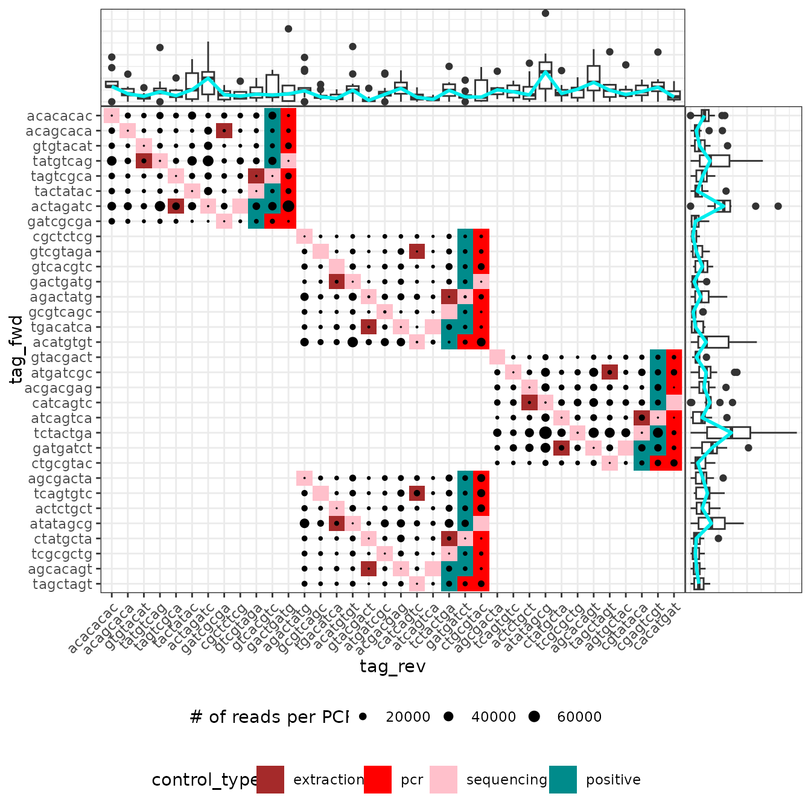
The ggpcrtag function works in a similar fashion to ggpcrplate. The plot shows the number of reads in their full PCR design, i.e. with all plates together including their shared tags. The boxplots above and to the right show the distribution of the number of reads obtained for each tag-primer. If the tagging strategy relies on identical tags for both primers, then only the diagonal of this plot will be shown.
Visualisation with tools borrowed from ecology
Another useful way to visualise the success of the experiment consists in constructing rarefaction curves, which can indicate whether sequencing effort is sufficient to cover the diversity in MOTUs of each pcr (remember here that sequencing is a sampling process of amplicons/MOTUs within the PCR tube, not of the diversity in the sampling site).
In metabaR, rarefaction curves are constructed with three diversity indices. These are part of the Hill numbers framework (reviewed in Chao, Chiu, and Jost 2014), which is based on the concept of effective number species, and is defined as follows:
\(^{q}D=(\sum_{i=1}^{S}p_i^q)^{1/(1-q)}\)
Where \(S\) is the total number of species, and \(p_i\) the species frequency. The diversity \(^{q}D\) corresponds to the diversity of equally-common species, with order \(q\) defining the degree of species commonness. In other words, this framework give less weight to rare species when \(q\) increases. The interesting feature of the framework is that it unifies mathematically the best known diversity measures in ecology through this unique parameter \(q\):
for \(q=0\), \(^{0}D\) is species richness
for \(q=1\), \(^{1}D\) approaches the exponential of the Shannon index \(H'=\sum_{i=1}^{S}p_i log p_i\)
for \(q=2\), \(^{2}D\) is the inverted of the Simpson index \(\lambda=\sum_{i=1}^{S}p_i^2\)
These are the value of \(q\) for which metabaR will construct rarefaction curves.
For metabarcoding data, these indices are particularly useful because they allow users to give less weight to rare MOTUs, which often correspond to molecular artifacts and of which inclusion in the data can lead to spurious ecological conclusions (Taberlet et al. 2018; Alberdi and Gilbert 2019; Calderón-Sanou et al. 2020).
metabaR also computes the Good’s coverage index for each pcr:
\(Coverage = 1-\frac{N_{singletons}}{N}\)
Where \(N_{singletons}\) is the number of singletons and \(N\) the total number of individuals, i.e. the proportion of reads that are not singletons in the pcr. Note that the Good coverage index should be interpreted carefully with DNA metabarcoding data, as it is based on singletons. First, because singletons are potentially spurious signal that can be especially important is species- or DNA-poor samples. This may lead to an overestimation of the coverage. On the other hand, “absolute singletons” (i.e. singletons across the whole sequence dataset) are often filtered out during the bioinformatic process, so the number of singletons observed at this stage of the analysis is likely to be strongly underestimated (and this would artificially lower the coverage estimate).
Since this process can take a while to calculate with large datasets, we here only construct rarefaction curves for a subset of pcrs, in this case by keeping only few samples from the H20 plot of the Petit Plateau. The subsetting of the soil_euk dataset can be done as follows:
# Get the samples names from the H20 plot
h20_id <- grepl("H20-[A-B]", rownames(soil_euk$pcrs))
# Subset the data
soil_euk_h20 <- subset_metabarlist(soil_euk, table = "pcrs", indices = h20_id)
# Check results
summary_metabarlist(soil_euk_h20)
#> $dataset_dimension
#> n_row n_col
#> reads 16 3182
#> motus 3182 15
#> pcrs 16 13
#> samples 4 8
#>
#> $dataset_statistics
#> nb_reads nb_motus avg_reads sd_reads avg_motus sd_motus
#> pcrs 154553 3182 9659.562 7233.992 537.1875 157.0292
#> samples 154553 3182 9659.562 7233.992 537.1875 157.0292Note that subsetting of a metabarlist object can be done with subset_metabarlist with any criterion, based either on MOTUs, pcrs, or samples characteristics.
Now lets construct the rarefaction curves with the hill_rarefaction function. The number of sequencing depths used to build these curves is defined by the nsteps argument. For each sequencing depth, the reads table is resampled randomly nboot times so that to obtain an estimate of \(^{q}D\) and \(Coverage\). nboot is low in the example below to limit the computing time.
soil_euk_h20.raref = hill_rarefaction(soil_euk_h20, nboot = 20, nsteps = 10)
head(soil_euk_h20.raref$hill_table)#> pcr_id reads D0 D0.sd D1 D1.sd D2 D2.sd
#> 1 H20-As_r1 5 4.60 0.598243 4.475125 1.180418 4.460317 0.7731693
#> 2 H20-As_r1 10 8.60 1.095445 8.150171 1.189881 7.901876 1.5261629
#> 3 H20-As_r1 100 52.20 3.592390 38.651053 1.098978 28.307113 3.4806900
#> 4 H20-As_r1 200 79.55 5.651968 48.041391 1.096751 30.467614 3.6207116
#> 5 H20-As_r1 500 137.45 7.308791 63.615132 1.065909 34.121794 2.6286914
#> 6 H20-As_r1 1000 201.90 8.931906 73.582977 1.057857 35.582662 1.7948423
#> coverage coverage.sd
#> 1 0.1600 0.239297217
#> 2 0.2600 0.181803827
#> 3 0.6590 0.051595593
#> 4 0.7510 0.034928498
#> 5 0.8489 0.017136910
#> 6 0.8966 0.008586403The hill_rarefaction function produces an object with several elements. The most relevant one is the hill_table a table indicating the pcr_id, the sequencing depth at which the pcr was resampled, and the corresponding diversity / coverage indices. The output of hill_rarefaction can be used to draw rarefaction curves.
gghill_rarefaction(soil_euk_h20.raref) 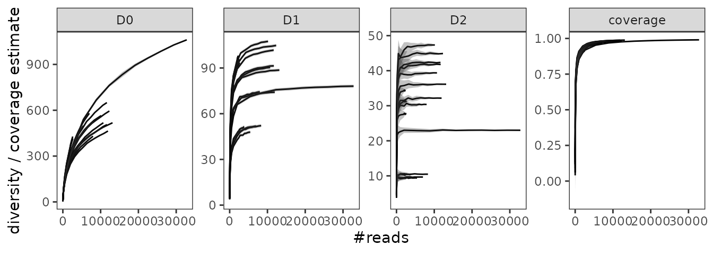
The user may also want to distinguish different types of samples on these curves, for example here soil vs. litter samples. This can be achieved as follows:
# Define a vector containing the Material info for each pcrs
material <- soil_euk_h20$samples$Material[match(soil_euk_h20$pcrs$sample_id,
rownames(soil_euk_h20$samples))]
# Use of gghill_rarefaction requires a vector with named pcrs
material <- setNames(material,rownames(soil_euk_h20$pcrs))
# Plot
p <- gghill_rarefaction(soil_euk_h20.raref, group=material)
p + scale_fill_manual(values = c("goldenrod4", "brown4", "grey")) +
scale_color_manual(values = c("goldenrod4", "brown4", "grey")) +
labs(color="Material type")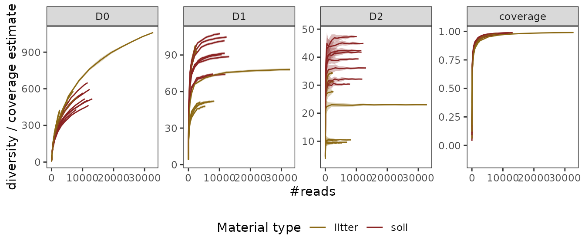
The obtained curves tell us a couple of things about the pcrs:
- The sampling coverage is relatively high even at intermediate sequencing depths (but see remarks above).
- The less weight is given to rare MOTUs (i.e. the higher \(q\) is), the better \(^{q}D\) is estimated.
- Litter samples in general tend to be less diverse than soil samples.
Flagging spurious signal
The next steps of the analysis usually consist in identifying potential spurious signal, whether in terms of MOTUs (e.g. contaminants, untargeted taxa due to primer lack of specificity), MOTUs abundances (i.e. tag-jumps ), or pcrs (pcrs yielding low amounts of reads or with low replicability). In this tutorial, the flagging is done by creating a boolean vector (i.e. TRUE/FALSE where TRUE is good quality signal) specific to each flagging criterion.
Detecting contaminants based on experimental negative controls
Contamination can occur at multiple stages, from sample collection to library preparation. Detecting these contaminants can be done through the use of negative controls at each stage (reviewed in Taberlet et al. 2018; Zinger et al. 2019), as is the case for the soil_euk dataset.
Due to the tagjump bias, many genuine MOTUs that are abundant in samples can be detected in negative controls. Consequently, simply removing from the dataset any MOTU that occurs in negative controls is a very bad idea.
A contaminant should be preferentially amplified in negative controls since there is no competing DNA. The function contaslayer relies on this assumption and detects MOTUs whose relative abundance across the whole dataset is highest in negative controls. Note however that this approach won’t be appropriate if the negative controls have been contaminated with biological samples. In this case,contaslayer should identify MOTUs that are dominants in samples.
The function contaslayer adds a new column in table motus indicating whether the MOTU is a genuine MOTU (TRUE) or a contaminant (FALSE). Below, this is demonstrated with the detection of contaminants from the DNA extraction step.
# Identifying extraction contaminants
soil_euk <- contaslayer(soil_euk,
control_types = "extraction",
output_col = "not_an_extraction_conta")
table(soil_euk$motus$not_an_extraction_conta)
#>
#> FALSE TRUE
#> 66 12581contaslayer identified here 66 contaminant MOTUs. Below are the ten most common extraction contaminants identified by contaslayer in the soil_euk dataset.
| total # reads | similarity to ref DB | full taxonomic path | sequence |
|---|---|---|---|
| 195920 | 1 | root, Eukaryota | ctcaaacttccatcggcttgagccgatagtccctctaagaagccggcgaccagccaaagctagcctggctatttagcaggttaaggtctcgttcgttat |
| 23499 | 1 | root, Eukaryota, Viridiplantae, Streptophyta, Streptophytina, Embryophyta, Tracheophyta, Euphyllophyta, Spermatophyta, Magnoliophyta, Mesangiospermae, eudicotyledons, Gunneridae, Pentapetalae, rosids, malvids, Sapindales | ctcaaacttccttggcctaagcggccatagtccctctaagaagctggccacggagggatacctccgcatagctagttagcaggctgaggtctcgttcgttaa |
| 8296 | 1 | root, Eukaryota, Opisthokonta, Fungi, Dikarya, Ascomycota, saccharomyceta, Saccharomycotina, Saccharomycetes, Saccharomycetales | ctcaaacttccatcgacttgaaatcgatagtccctctaagaagtgactataccagcaaaagctagcagcactatttagtaggttaaggtctcgttcgttat |
| 4010 | 1 | root | ctcaaacttccatcggcttgaaaccgatagtccctctaagaagtggataaccagcaaatgctagcaccactatttagtaggttaaggtctcgttcgttat |
| 1055 | 1 | root, Eukaryota, Opisthokonta, Fungi, Dikarya, Basidiomycota, Ustilaginomycotina, Exobasidiomycetes, Entylomatales | ctcaaacttccattagctaaacgccaatagtccctctaagaagccagcggctaaccatagtcggccgggctatttagcaggttaaggtctcgttcgttat |
| 966 | 1 | root, Eukaryota, Stramenopiles, Chrysophyceae, Chromulinales, Chromulinaceae | ccccaacttcctttggttagtcaccaaaagtccctctaagaagcttacgtcaatactagtgcattaacaaaactatttagcaggcgggggtctcgttcgttaa |
| 611 | 1 | root, Eukaryota, Opisthokonta, Fungi, Dikarya, Basidiomycota, Agaricomycotina, Tremellomycetes | ctcaaacttccaacagctaaacgctgttagtccctctaagaagacagcggccagcaaaagccgaccggtctatttagcaggttaaggtctcgttcgttat |
| 473 | 1 | root, Eukaryota, Viridiplantae, Streptophyta, Streptophytina, Embryophyta, Tracheophyta, Euphyllophyta, Spermatophyta, Magnoliophyta, Mesangiospermae, Liliopsida, Petrosaviidae, commelinids, Poales, Poaceae, BOP clade, Pooideae | ctcaaacttccgtcgcctaaacggcgatagtccctctaagaagctagctgcggagggatggctccgcatagctagttagcaggctgaggtctcgttcgttaa |
| 456 | 1 | root, Eukaryota, Opisthokonta, Fungi, Dikarya, Basidiomycota, Ustilaginomycotina, Malasseziomycetes, Malasseziales, Malasseziaceae, Malassezia | ctcaaacttccattggctaaacgccaatagtccctctaagaagccagcagccaaccatagtcgactgggctatttagcaggttaaggtctcgttcgttat |
| 189 | 1 | root, Eukaryota, Viridiplantae, Streptophyta, Streptophytina, Embryophyta, Tracheophyta, Euphyllophyta, Spermatophyta, Magnoliophyta, Mesangiospermae | ctcaaacttccgtggcctaaacggccatagtccctctaagaagctggccgcggagggatgcctccgtgtagctagttagcaggctgaggtctcgttcgttat |
The identified contaminants correspond to metazoans (including humans), protists, fungi and plants. The most abundant contaminant does not have fine taxonomic identification in the soil_euk dataset, but a BLAST search of the sequence in NCBI suggests that it most likely corresponds to a Fusarium, a notorious laboratory contaminant.
Next, one may want to know how these contamiants are distributed across the soil_euk dataset. For example, the contamination could be present only in one PCR plate for some reason. To assess this, one could use ggpcrplate to plot the distribution of the most common contaminant across the PCR setup:
# Identify the most common contaminant
# get contaminant ids
id <- !soil_euk$motus$not_an_extraction_conta
max.conta <- rownames(soil_euk$motus[id,])[which.max(soil_euk$motus[id, "count"])]
#... and its distribution and relative abundance in each pcr
ggpcrplate(soil_euk, legend_title = "#reads of most \nabundant contaminant",
FUN = function(m) {m$reads[, max.conta]/rowSums(m$reads)})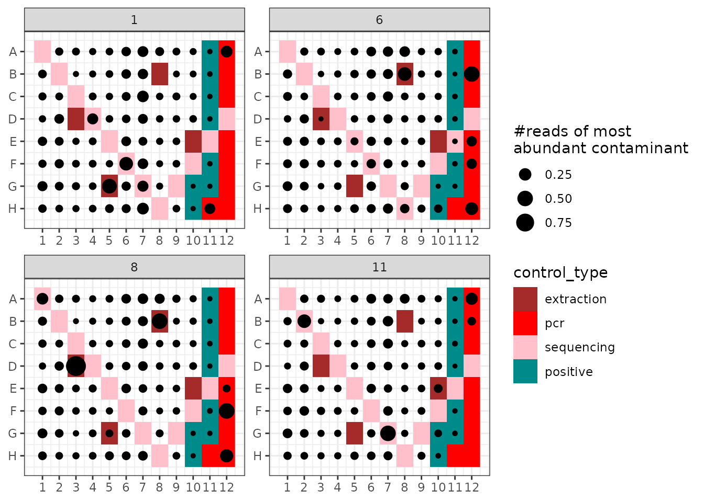
In the soil_euk dataset, the most abundant contaminant occurs across all samples, but in general at low relative abundance (on average 1.82 %) here.
One can also determine whether pcrs exhibit generally high proportions of contaminants.
# Compute relative abundance of all pcr contaminants together
a <- data.frame(conta.relab = rowSums(soil_euk$reads[,!soil_euk$motus$not_an_extraction_conta]) /
rowSums(soil_euk$reads))
# Add information on control types
a$control_type <- soil_euk$pcrs$control_type[match(rownames(a), rownames(soil_euk$pcrs))]
ggplot(a, aes(x=control_type, y=conta.relab, color=control_type)) +
geom_boxplot() + geom_jitter(alpha=0.5) +
scale_color_manual(values = c("brown", "red", "cyan4","pink"), na.value = "darkgrey") +
labs(x=NULL, y="Prop. Reads (log10)") +
theme_bw() +
scale_y_log10()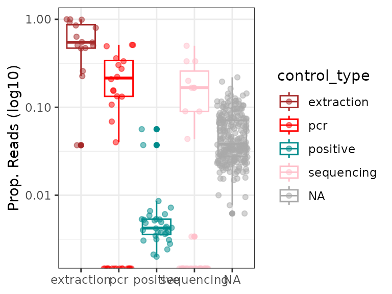
Overall, samples yield much less amounts of extraction contaminants than experimental negative controls. Some pcrs corresponding to samples have, however, > 10% of their reads corresponding to contaminants and could be unusable. Based on this criteria pcrs could be flagged as follows for potential downstream filtering:
# flag pcrs with total contaminant relative abundance > 10% of reads)
soil_euk$pcrs$low_contamination_level <-
ifelse(a$conta.relab[match(rownames(soil_euk$pcrs), rownames(a))]>1e-1, F, T)
# Proportion of potentially functional (TRUE) vs. failed (FALSE) pcrs
# (controls included) based on this criterion
table(soil_euk$pcrs$low_contamination_level) / nrow(soil_euk$pcrs)
#>
#> FALSE TRUE
#> 0.1666667 0.8046875Note that this step should be done for all types of contaminants (coming from extraction, pcr or sequencing). The user can identify each of them separetly or without differentiating the different controls types.
Flagging spurious or non-target MOTUs
Non-target sequences can be amplified if the primers are not specific enough. On the other hand, some highly degraded sequences can be produced throughout the data production process, such as primer dimers, or chimeras from multiple parents (hereafter referred to as spurious MOTUs). To detect these, one can use the information related to taxonomic assignments and associated similarity scores.
Since the soil_euk dataset was obtained with primers that target eukaryotes, non-eukaryotic MOTUs should be excluded. At this stage of the analysis, we only flag MOTUs based on this criterion.
#Flag MOTUs corresponding to target (TRUE) vs. non-target (FALSE) taxa
soil_euk$motus$target_taxon <- grepl("Eukaryota", soil_euk$motus$path)
# Proportion of each of these over total number of MOTUs
table(soil_euk$motus$target_taxon) / nrow(soil_euk$motus)
#>
#> FALSE TRUE
#> 0.04356764 0.95643236
# Intersection with extraction contaminant flags (not contaminant = T)
table(soil_euk$motus$target_taxon,
soil_euk$motus$not_an_extraction_conta)
#>
#> FALSE TRUE
#> FALSE 8 543
#> TRUE 58 12038Here we flagged 8 MOTUS as non-targets, which were already flagged as potential extraction contaminants.
Next, we want to identify MOTUs whose sequence is too dissimilar from references. This filtering criterion relies on the assumption that current reference databases capture most of the diversity at broad taxonomic levels (i.e. already have for example at least one representative of each phyla). Considering this, MOTUs being too distant from reference databases are more likely to be a degraded sequence, especially if such MOTUs are relatively numerous and of low abundance. To assess this, one can use the distribution of MOTU similarity scores, weighted and unweighted by their relative abundance.
# Plot the unweighted distribution of MOTUs similarity scores
a <-
ggplot(soil_euk$motus, aes(x=best_identity.order_filtered_embl_r136_noenv_EUK)) +
geom_histogram(color="grey", fill="white", bins=20) +
geom_vline(xintercept = 0.8, col="orange", lty=2) +
theme_bw() +
theme(panel.grid = element_blank()) +
labs(x="% similarity against best match", y="# MOTUs")
# Same for the weighted distribution
b <-
ggplot(soil_euk$motus,
aes(x=best_identity.order_filtered_embl_r136_noenv_EUK, y = ..count.., weight = count)) +
geom_histogram(color="grey", fill="white", bins=20) +
geom_vline(xintercept = 0.8, col="orange", lty=2) +
theme_bw() +
theme(panel.grid = element_blank()) +
labs(x="% similarity against best match", y="# Reads")
# Combine plots into one
library(cowplot)
ggdraw() +
draw_plot(a, x=0, y=0, width = 0.5) +
draw_plot(b, x=0.5, y=0, width = 0.5)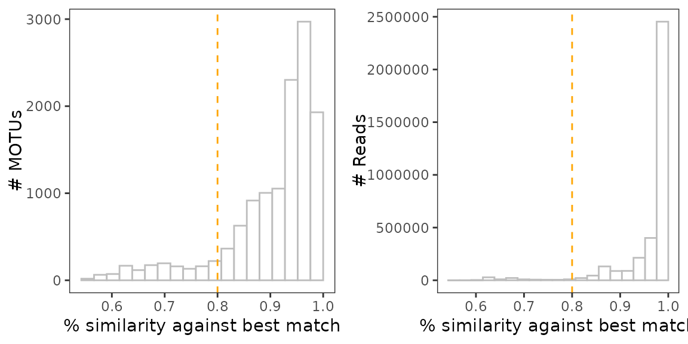
Here we may consider any MOTU as degraded sequences if its sequence similarity is < 80% against its best match in the reference database.
# Flag not degraded (TRUE) vs. potentially degraded sequences (FALSE)
soil_euk$motus$not_degraded <-
ifelse(soil_euk$motus$best_identity.order_filtered_embl_r136_noenv_EUK < 0.8, F, T)
# Proportion of each of these over total number of MOTUs
table(soil_euk$motus$not_degraded) / nrow(soil_euk$motus)
#>
#> FALSE TRUE
#> 0.111568 0.888432
# Intersection with other flags
table(soil_euk$motus$target_taxon,
soil_euk$motus$not_an_extraction_conta,
soil_euk$motus$not_degraded)
#> , , = FALSE
#>
#>
#> FALSE TRUE
#> FALSE 7 438
#> TRUE 10 956
#>
#> , , = TRUE
#>
#>
#> FALSE TRUE
#> FALSE 1 105
#> TRUE 48 11082Here, we find that 7 non-target MOTUs are also extraction contaminants and potentially degraded fragments.
Detecting PCR outliers
A first way to identify failed PCRs is to flag them based on the pcr sequencing depth
ggplot(soil_euk$pcrs, aes(nb_reads)) +
geom_histogram(bins=40, color="grey", fill="white") +
geom_vline(xintercept = 1e3, lty=2, color="orange") + # threshold
scale_x_log10() +
labs(x="# Reads (with all MOTUs and PCRs)",
y="# PCRs") +
theme_bw() +
theme(panel.grid = element_blank())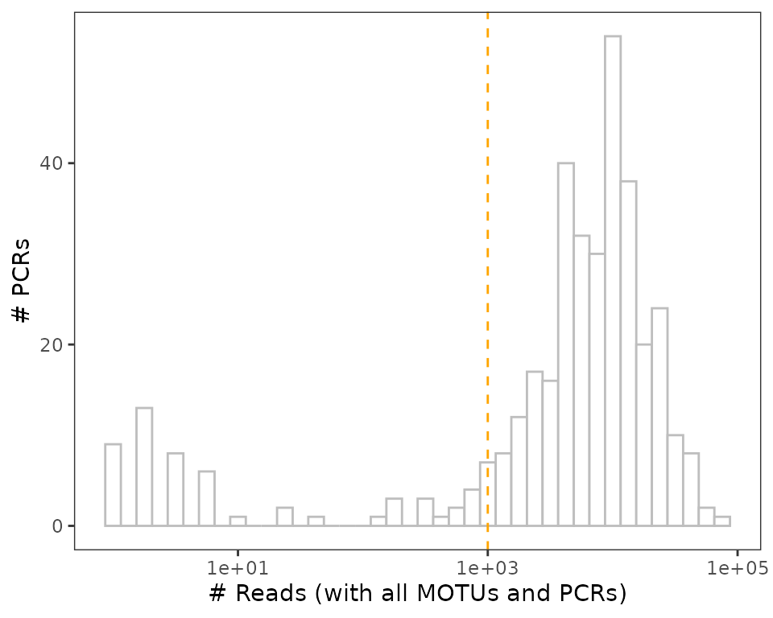
The histogram above includes negative controls, which - fortunately - yield low amounts of reads in general, but also pcrs obtained from samples, as shown below.
# Flag pcrs with an acceptable sequencing depth (TRUE) or inacceptable one (FALSE)
soil_euk$pcrs$seqdepth_ok <- ifelse(soil_euk$pcrs$nb_reads < 1e3, F, T)
# Proportion of each of these over total number of pcrs, control excluded
table(soil_euk$pcrs$seqdepth_ok[soil_euk$pcrs$type=="sample"]) /
nrow(soil_euk$pcrs[soil_euk$pcrs$type=="sample",])
#>
#> FALSE TRUE
#> 0.02734375 0.97265625A second way to evaluate the PCR quality is to assess their reproducibility. The pcrslayer and associated functions (e.g. pcr_within_between) enable the detection of outlier replicates within pcrs using different methods, with a common underlying assumption: the compositional dissimilarities in MOTUs between replicate pcrs from a same sample should be lower than that observed between pcrs obtained from different samples (see help page for more details). This assessment is obviously only possible when the experimental designs includes PCR replicates for each biological samples. For these function to run, pcrs yielding no reads, as well as negative controls, should be excluded.
# Subsetting the metabarlist
soil_euk_sub <- subset_metabarlist(soil_euk,
table = "pcrs",
indices = soil_euk$pcrs$nb_reads>0 & (
is.na(soil_euk$pcrs$control_type) |
soil_euk$pcrs$control_type=="positive"))
# First visualization
comp1 = pcr_within_between(soil_euk_sub)
check_pcr_thresh(comp1)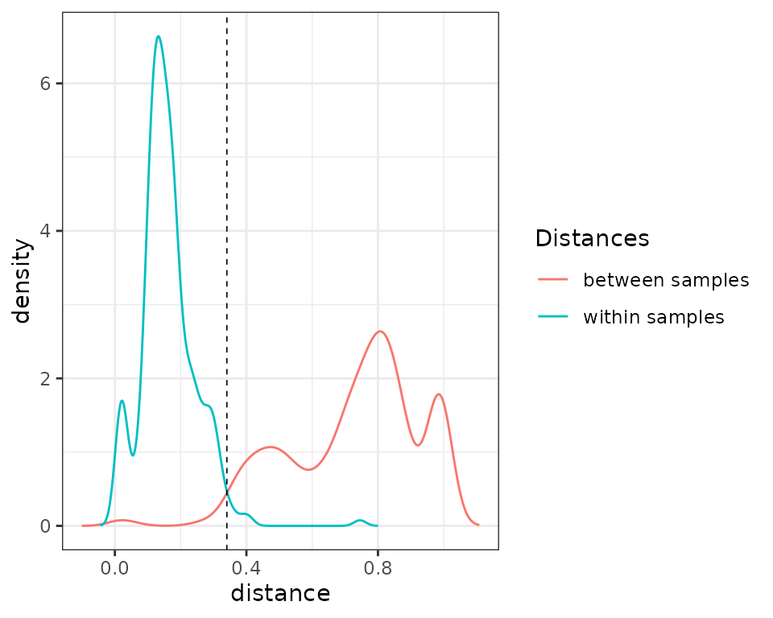
In the density plots shown above, one can see that several pcrs replicates are as distant than pcrs from different samples. Let’s now flag pcrs based on this criterion and store this in the output_col column of the pcr table:
# Flagging
soil_euk_sub <- pcrslayer(soil_euk_sub, output_col = "replicating_pcr", plot = F)
#> [1] "Iteration 1"
#> [1] "Iteration 2"
#> [1] "Iteration 3"
# Proportion of replicating pcrs (TRUE)
table(soil_euk_sub$pcrs$replicating_pcr) /
nrow(soil_euk_sub$pcrs)
#>
#> FALSE TRUE
#> 0.01736111 0.98263889
# Intersection with the sequencing depth criterion
table(soil_euk_sub$pcrs$seqdepth_ok,
soil_euk_sub$pcrs$replicating_pcr)
#>
#> FALSE TRUE
#> FALSE 3 5
#> TRUE 2 278Here, 3 pcrs out of the 5 detected as outliers had low sequencing depth. One can also visualise the replicates and outliers behaviour in a Principal Coordinate Analysis with the function check_pcr_repl.
# Distinguish between pcrs obtained from samples from positive controls
mds = check_pcr_repl(soil_euk_sub,
groups = soil_euk_sub$pcrs$type,
funcpcr = soil_euk_sub$pcrs$replicating_pcr)
mds + labs(color = "pcr type") + scale_color_manual(values = c("cyan4", "gray"))Now report the flagging in the initial metabarlist
soil_euk$pcrs$replicating_pcr <- NA
soil_euk$pcrs[rownames(soil_euk_sub$pcrs),"replicating_pcr"] <- soil_euk_sub$pcrs$replicating_pcrLowering tag-jumps
Tag-jumps are frequency-dependent, i.e. abundant genuine MOTUs are more likely to be found in low abundance in samples were they are not supposed to be than rare genuine MOTUs. To reduce the amount of such false positives, the function tagjumpslayer considers each MOTU separately and corrects its abundance in pcrs (see tagjumpslayer help for more information on possible correction methods) when the MOTU relative abundance over the entire dataset is below a given threshold. Such data a curation strategy is similar to what has been proposed by Esling, Lejzerowicz, and Pawlowski (2015). Effect of this threshold can be evaluated by testing how this filtration procedure affects basic dataset characteristics (e.g. # MOTUs or reads) at different levels, as exemplified below.
# Define a vector of thresholds to test
thresholds <- c(0,1e-4,1e-3, 1e-2, 3e-2, 5e-2)
# Run the tests and stores the results in a list
tests <- lapply(thresholds, function(x) tagjumpslayer(soil_euk,x))
names(tests) <- paste("t_", thresholds, sep="")
# Format the data for ggplot with amount of reads at each threshold
tmp <- melt(as.matrix(do.call("rbind", lapply(tests, function(x) rowSums(x$reads)))))
colnames(tmp) <- c("threshold", "sample", "abundance")
# Add richness in MOTUs at each threshold
tmp$richness <-
melt(as.matrix(do.call("rbind", lapply(tests, function(x) {
rowSums(x$reads > 0)
}))))$value
# Add control type information on pcrs and make data curation threshold numeric
tmp$controls <- soil_euk$pcrs$control_type[match(tmp$sample, rownames(soil_euk$pcrs))]
tmp$threshold <- as.numeric(gsub("t_", "", tmp$threshold))
# New table formatting for ggplot
tmp2 <- melt(tmp, id.vars=colnames(tmp)[-grep("abundance|richness", colnames(tmp))])
ggplot(tmp2, aes(x=as.factor(threshold), y=value)) +
geom_boxplot(color="grey40") +
geom_vline(xintercept = which(levels(as.factor(tmp2$threshold)) == "0.01"), col="orange", lty=2) +
geom_jitter(aes(color=controls), width = 0.2, alpha=0.5) +
scale_color_manual(values = c("brown", "red", "cyan4","pink"), na.value = "darkgrey") +
facet_wrap(~variable+controls, scale="free_y", ncol=5) +
theme_bw() +
scale_y_log10() +
labs(x="MOTU pcr : total abundance filtering threshold", y="# Reads/MOTUs") +
theme(panel.grid = element_blank(),
strip.background = element_blank(),
axis.text.x = element_text(angle=40, h=1),
legend.position = "none")
A threshold of 0.01 leads to a drop in both the number of reads and of MOTUs in sequencing negative controls. This drop is also noticeable in terms of the number of MOTUs in pcrs obtained from other controls as compared to those obtained from samples. The former are expected to be void of environmental MOTUs, and tag-jumps should be more visible/important in these pcrs. Note that this procedure primarily affects MOTU diversity in pcrs, and poorly the number of reads in pcrs.
As for above, pcrs containing large amounts of MOTUs identified as potentially artifactual or where tag-jumps filtering strongly affects the number of reads in pcrs can be flagged as potentially failed.
Summarizing the noise in the soil_euk dataset
We can now get an overview of the amount of noise identified with the criteria used above, for both the number of MOTUs and their associated readcount.
# Create a table of MOTUs quality criteria
# noise is identified as FALSE in soil_euk, the "!" transforms it to TRUE
motus.qual <- !soil_euk$motus[,c("not_an_extraction_conta", "target_taxon", "not_degraded")]
colnames(motus.qual) <- c("extraction_conta", "untargeted_taxon", "degraded_seq")
# Proportion of MOTUs potentially artifactual (TRUE) based on the criteria used
prop.table(table(apply(motus.qual, 1, sum) > 0))
#>
#> FALSE TRUE
#> 0.8762552 0.1237448
# Corresponding proportion of artifactual reads (TRUE)
prop.table(xtabs(soil_euk$motus$count~apply(motus.qual, 1, sum) > 0))
#> apply(motus.qual, 1, sum) > 0
#> FALSE TRUE
#> 0.90582023 0.09417977
# Proportion of MOTUs and reads potentially artifactual for each criterion
apply(motus.qual, 2, sum) / nrow(motus.qual)
#> extraction_conta untargeted_taxon degraded_seq
#> 0.005218629 0.043567645 0.111567961
apply(motus.qual, 2, function(x) sum(soil_euk$motus$count[x])/sum(soil_euk$motus$count))
#> extraction_conta untargeted_taxon degraded_seq
#> 0.06669166 0.01372710 0.02629960
tmp.motus <-
apply(sapply(1:ncol(motus.qual), function(x) {
ifelse(motus.qual[,x]==T, colnames(motus.qual)[x], NA)}), 1, function(x) {
paste(sort(unique(x)), collapse = "|")
})
tmp.motus <- as.data.frame(gsub("^$", "not_artefactual", tmp.motus))
colnames(tmp.motus) <- "artefact_type"
ggplot(tmp.motus, aes(x=1, fill=artefact_type)) +
geom_bar() + xlim(0, 2) +
labs(fill="Artifact type") +
coord_polar(theta="y") + theme_void() +
scale_fill_brewer(palette = "Set3") +
theme(legend.direction = "vertical") +
ggtitle("MOTUs artefacts overview")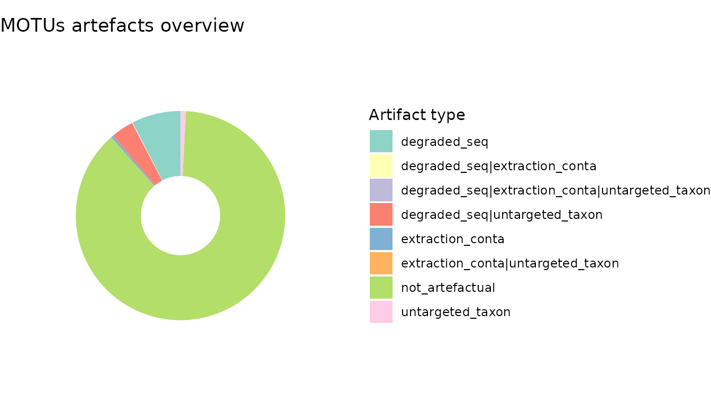
The above shows that MOTUs flagged as potentially artefactual account for ca. 10% of the dataset’s diversity and roughly the same in terms of readcount. Most of these artifact MOTUs are rare and correspond to sequences which are potentially highly degraded, with very low sequence similarity against the EMBL reference database. The most abundant artifacts MOTUs were identified as contaminants.
Let’s do the same with pcrs
# Create a table of pcrs quality criteria
# noise is identified as FALSE in soil_euk, the "!" transforms it to TRUE
pcrs.qual <- !soil_euk$pcrs[,c("low_contamination_level", "seqdepth_ok", "replicating_pcr")]
colnames(pcrs.qual) <- c("high_contamination_level", "low_seqdepth", "outliers")
# Proportion of pcrs potentially artifactual (TRUE) based on the criteria used
# excluding controls
prop.table(table(apply(pcrs.qual[soil_euk$pcrs$type=="sample",], 1, sum) > 0))
#>
#> FALSE TRUE
#> 0.8671875 0.1328125
# Proportion of MOTUs and reads potentially artifactual for each criterion
apply(pcrs.qual[soil_euk$pcrs$type=="sample",], 2, sum) / nrow(pcrs.qual[soil_euk$pcrs$type=="sample",])
#> high_contamination_level low_seqdepth outliers
#> 0.10937500 0.02734375 0.01562500
tmp.pcrs <-
apply(sapply(1:ncol(pcrs.qual), function(x) {
ifelse(pcrs.qual[soil_euk$pcrs$type=="sample",x]==T,
colnames(pcrs.qual)[x], NA)}), 1, function(x) {
paste(sort(unique(x)), collapse = "|")
})
tmp.pcrs <- as.data.frame(gsub("^$", "not_artefactual", tmp.pcrs))
colnames(tmp.pcrs) <- "artefact_type"
ggplot(tmp.pcrs, aes(x=1, fill=artefact_type)) +
geom_bar() + xlim(0, 2) +
labs(fill="Artifact type") +
coord_polar(theta="y") + theme_void() +
scale_fill_brewer(palette = "Set3") +
theme(legend.direction = "vertical") +
ggtitle("PCR artefacts overview")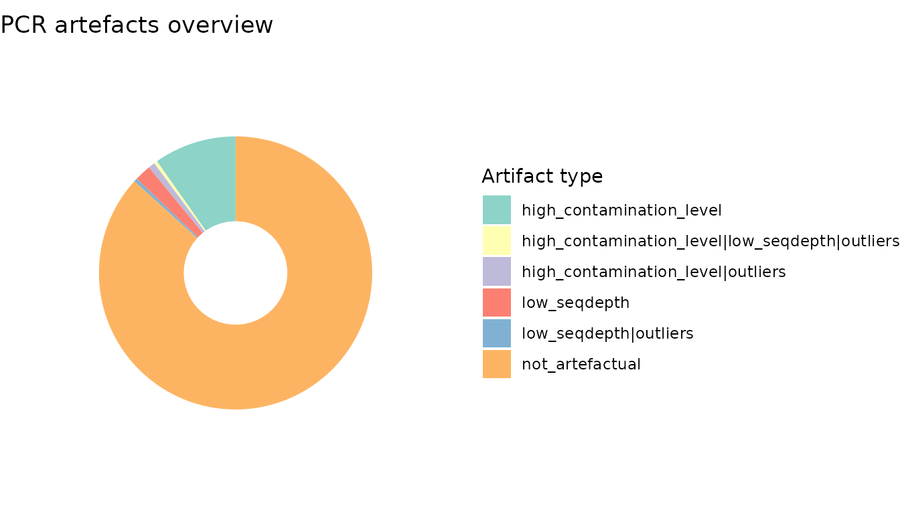
The pcrs flagged as potentially failed account for ca. 10% of the pcrs, most of these corresponding to pcrs yiedling a high amount of contaminants.
Data cleaning and aggregation
The final stage of the analysis consists in removing data based on the criteria defined above and aggregating pcrs to get rid of technical replicates. Here, the decision of which of these flagged criteria to use rests with the user, depending on how they feel the tagged errors impact on the characteristics of their dataset.
Removing spurious signal
First, we will remove suprious MOTUs, PCRs and adjusting read counts by removing tag-jumps . At this stage of the analysis, controls are no longer necessary, and so can also be removed from the dataset.
# Use tag-jump corrected metabarlist with the threshold identified above
tmp <- tests[["t_0.01"]]
# Subset on MOTUs: we keep motus that are defined as TRUE following the
# three criteria below (sum of three TRUE is equal to 3 with the rowSums function)
tmp <- subset_metabarlist(tmp, "motus",
indices = rowSums(tmp$motus[,c("not_an_extraction_conta", "target_taxon",
"not_degraded")]) == 3)
summary_metabarlist(tmp)
#> $dataset_dimension
#> n_row n_col
#> reads 384 11082
#> motus 11082 18
#> pcrs 384 16
#> samples 64 8
#>
#> $dataset_statistics
#> nb_reads nb_motus avg_reads sd_reads avg_motus sd_motus
#> pcrs 3173438 11082 8264.161 9543.057 285.3333 266.7837
#> samples 2514362 10886 9821.727 9453.080 420.4492 227.2386Same with pcrs
# Subset on pcrs and keep only controls
soil_euk_clean <- subset_metabarlist(tmp, "pcrs",
indices = rowSums(tmp$pcrs[,c("low_contamination_level",
"seqdepth_ok", "replicating_pcr")]) == 3 &
tmp$pcrs$type == "sample")
summary_metabarlist(soil_euk_clean)
#> $dataset_dimension
#> n_row n_col
#> reads 222 10570
#> motus 10570 18
#> pcrs 222 16
#> samples 61 8
#>
#> $dataset_statistics
#> nb_reads nb_motus avg_reads sd_reads avg_motus sd_motus
#> pcrs 2193430 10570 9880.315 9540.84 446.3333 228.1212
#> samples 2193430 10570 9880.315 9540.84 446.3333 228.1212Now check if previous subsetting leads to any empty pcrs or MOTUs
if(sum(colSums(soil_euk_clean$reads)==0)>0){print("empty motus present")}
if(sum(colSums(soil_euk_clean$reads)==0)>0){print("empty pcrs present")}Since we have now removed certain MOTUs or reduced their read counts, we need to update some parameters in the metabarlist (e.g. counts, etc.).
soil_euk_clean$motus$count = colSums(soil_euk_clean$reads)
soil_euk_clean$pcrs$nb_reads_postmetabaR = rowSums(soil_euk_clean$reads)
soil_euk_clean$pcrs$nb_motus_postmetabaR = rowSums(ifelse(soil_euk_clean$reads>0, T, F))We can now compare some basic characteristics of the soil_euk before and after data curation with metabaR.
check <- melt(soil_euk_clean$pcrs[,c("nb_reads", "nb_reads_postmetabaR",
"nb_motus", "nb_motus_postmetabaR")])
check$type <- ifelse(grepl("motus", check$variable), "richness", "abundance")
ggplot(data = check, aes(x = variable, y = value)) +
geom_boxplot( color = "darkgrey") +
geom_jitter(alpha=0.1, color = "darkgrey") +
theme_bw() +
facet_wrap(~type, scales = "free", ncol = 5) +
theme(axis.text.x = element_text(angle=45, h=1))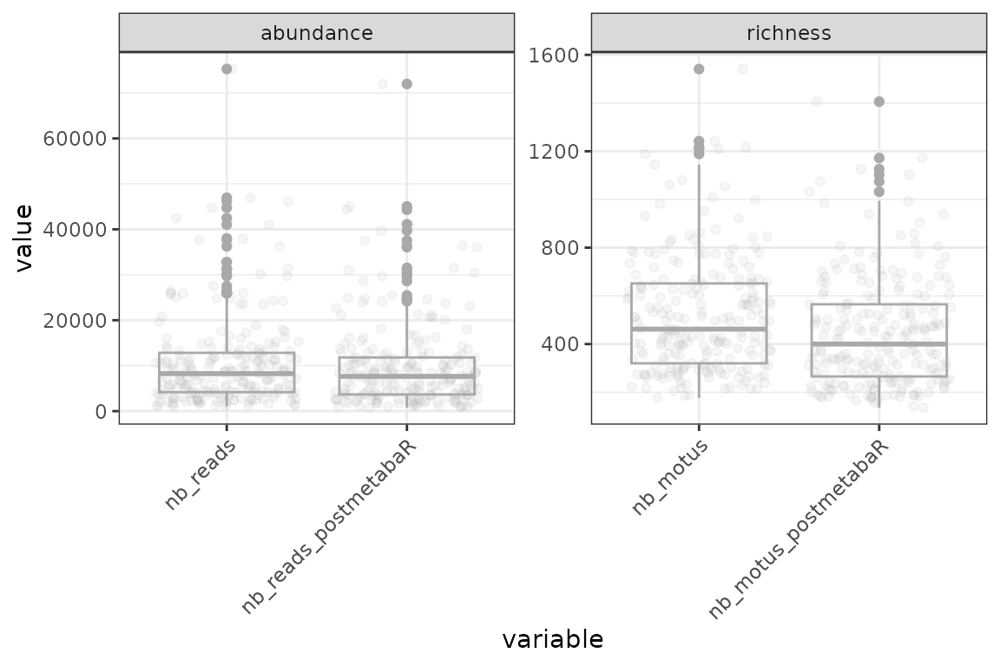
The sequencing depth and richness of pcrs are not greatly affected by the trimming.
Let’s now see if the signal is changed in terms of beta diversity:
# Get row data only for samples
tmp <- subset_metabarlist(soil_euk, table = "pcrs",
indices = soil_euk$pcrs$type == "sample")
# Add sample biological information for checks
tmp$pcrs$Material <- tmp$samples$Material[match(tmp$pcrs$sample_id, rownames(tmp$samples))]
tmp$pcrs$Habitat <- tmp$samples$Habitat[match(tmp$pcrs$sample_id, rownames(tmp$samples))]
soil_euk_clean$pcrs$Material <-
soil_euk_clean$samples$Material[match(soil_euk_clean$pcrs$sample_id,
rownames(soil_euk_clean$samples))]
soil_euk_clean$pcrs$Habitat <-
soil_euk_clean$samples$Habitat[match(soil_euk_clean$pcrs$sample_id,
rownames(soil_euk_clean$samples))]
# Build PCoA ordinations
mds1 <- check_pcr_repl(tmp,
groups = paste(tmp$pcrs$Habitat, tmp$pcrs$Material, sep = " | "))
mds2 <- check_pcr_repl(soil_euk_clean,
groups = paste(
soil_euk_clean$pcrs$Habitat,
soil_euk_clean$pcrs$Material,
sep = " | "))
# Custom colors
a <- mds1 + labs(color = "Habitat | Material") +
scale_color_manual(values = c("brown4", "brown1", "goldenrod4", "goldenrod1")) +
theme(legend.position = "none") +
ggtitle("Raw data")
b <- mds2 + labs(color = "Habitat | Material") +
scale_color_manual(values = c("brown4", "brown1", "goldenrod4", "goldenrod1")) +
ggtitle("Clean data")
# Assemble plots
leg <- get_legend(b + guides(shape=F) +
theme(legend.position = "right",
legend.direction = "vertical"))
ggdraw() +
draw_plot(a, x=0, y=0, width = 0.4, height = 1) +
draw_plot(b + guides(color=F, shape=F), x=0.42, y=0, width = 0.4, height = 1) +
draw_grob(leg, x=0.4, y=0)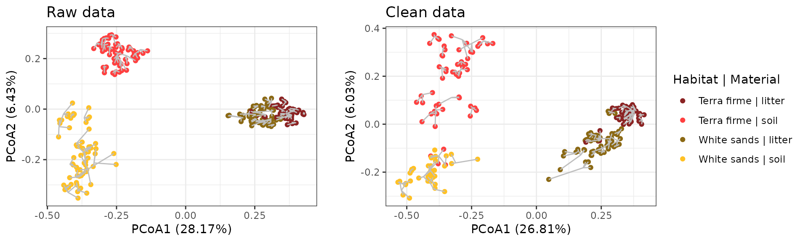
The resulting figure demonstrates that removing the various contaminants flagged above also increases the dissimilarities of samples both within and between- habitat and material types.
Data aggregation
At this stage, technical replicates of pcrs should be aggregated so as to focus on biological patterns. This can be done with the function aggregate_pcrs, which includes flexible possibilities for data aggregation methods. Here, we will simply sum MOTUs counts across pcrs replicates, which is the default function of aggregate_pcrs. Note that this function can also be used for other purposes than for aggregating technical replicates. For example, if technical replicates are not included in the experiment, one could instead aggregate biological replicates from a same site.
soil_euk_agg <- aggregate_pcrs(soil_euk_clean)
summary_metabarlist(soil_euk_agg)
#> $dataset_dimension
#> n_row n_col
#> reads 61 10570
#> motus 10570 18
#> pcrs 61 20
#> samples 61 8
#>
#> $dataset_statistics
#> nb_reads nb_motus avg_reads sd_reads avg_motus sd_motus
#> pcrs 2193430 10570 35957.87 21718.55 965.0328 401.6088
#> samples 2193430 10570 35957.87 21718.55 965.0328 401.6088Now, soil_euk_agg has the same dataset characteristics for pcrs and samples.
Final visualisations
Our data is now ready for ecological analyses with other R packages. Before finishing this tutorial, we will demonstrate the use of two last metabaR functions in addition to those of other Rpackages to roughly explore the characteristics of the final dataset.
Taxonomic composition
One challenge when assessing the taxonomic composition of DNA metabarcoding data is (i) taxonomic information that is not always available at the same taxonomic resolution, and (ii) the large taxonomic breadth of the community under study. The ggtaxplot function builds a taxonomic tree from information contained in the motus table, in order to provide an overview of the composition of the whole community:
ggtaxplot(soil_euk_agg,
taxo = "path",
sep.level = ":", sep.info = "@")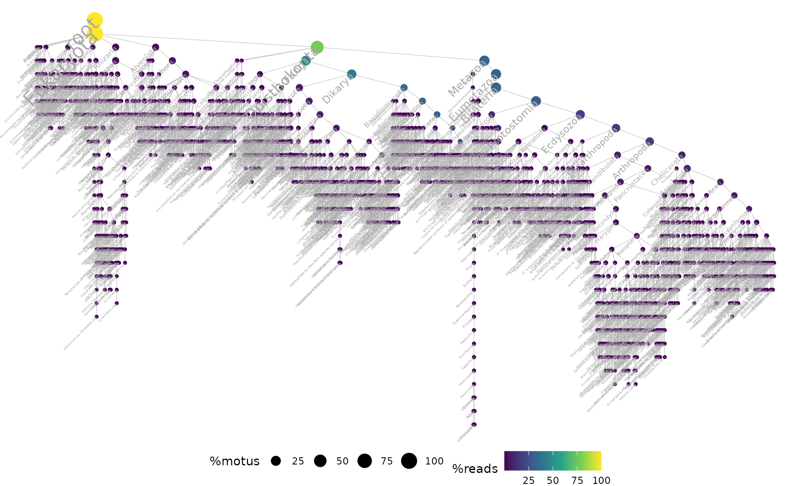
The taxonomic tree above shows that the soil_euk dataset is mainy composed of Fungi and Metazoa MOTUs and reads. Let’s have a further look at the taxonomic composition of phyla in one kingdom, the Metazoa. This can be done with function aggregate_motus. The kingdom level is not available as a single column in the soil_euk dataset, and so requires the parsing of the full MOTU taxonomic information available in the column “path”, with the taxoparser function.
# Get the kingdom names of MOTUs
kingdom <-
unname(sapply(taxoparser(taxopath = soil_euk_agg$motus$path,
sep.level = ":",sep.info = "@"),
function(x) x["kingdom"]))
# Create metazoa metabarlist
soil_metazoa <- subset_metabarlist(soil_euk_agg, "motus",
kingdom=="Metazoa" & !is.na(kingdom))
# Aggregate the metabarlist at the phylum level
soil_metazoa_phy <-
aggregate_motus(soil_metazoa, groups = soil_metazoa$motus$phylum_name)
# Aggregate per Habitat/material
tmp <-
melt(aggregate(soil_metazoa_phy$reads, by = list(
paste(soil_metazoa_phy$samples$Habitat,
soil_metazoa_phy$samples$Material,
sep = " | ")), sum))
# Plot
ggplot(tmp, aes(x=Group.1, y=value, fill=variable)) +
geom_bar(stat="identity") +
labs(x=NULL, y="#reads", fill="Phyla") +
coord_flip() + theme_bw() +
scale_fill_brewer(palette = "Set3") +
theme(legend.position = "bottom") +
ggtitle("Metazoa phyla")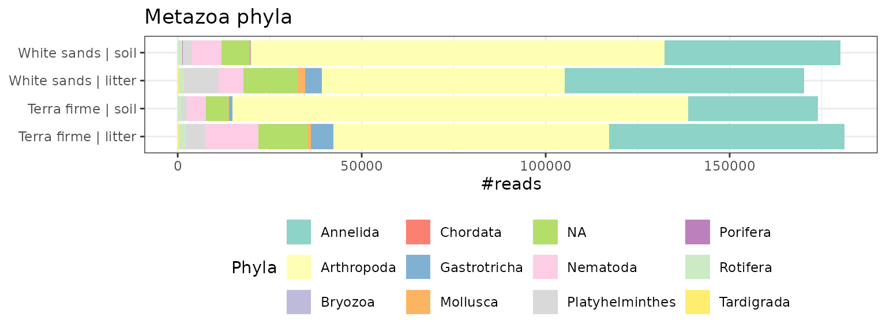
By considering a subset of our dataset, and aggregating at specific taxonomic levels, this approach has allowed us to uncover some initial trends in our data (e.g. that arthropod reads are higher in our soil samples versus our leaf litter samples).
Rarefaction curves
To finish, lets take a final look at the diversity coverage of samples with rarefaction curves (rather than our previous look at the pcrs level).
soil_euk_agg.raref = hill_rarefaction(soil_euk_agg, nboot = 20, nsteps = 10)
material <- paste(soil_euk_agg$samples$Habitat, soil_euk_agg$samples$Material)
material <- setNames(material,rownames(soil_euk_agg$samples))
#plot
p <- gghill_rarefaction(soil_euk_agg.raref, group=material)
p + scale_fill_manual(values = c("brown4", "brown1", "goldenrod4", "goldenrod1")) +
scale_color_manual(values = c("brown4", "brown1", "goldenrod4", "goldenrod1")) +
labs(color="Habitat | Material type")
This visualisation allows us to explore patterns of diversity across our sample substrates and habitats. You can now go on with ecological analyses using metabaR for data handling and any other R package!
Hopefully this tutorial has demonstrated the strength of metabaR in visualising data, its use for identifying and removing surious sequences, and ultimately its complementary nature with existing packages for data handling. We hope that you are encouraged to incorporate the above ideas into your future processing of metabarcoding data!
References
Alberdi, Antton, and M Thomas P Gilbert. 2019. “A Guide to the Application of Hill Numbers to Dna-Based Diversity Analyses.” Mol Ecol Resour 19 (4): 804–17. https://doi.org/10.1111/1755-0998.13014.
Boyer, F., C. Mercier, A. Bonin, Y. Le Bras, P. Taberlet, and E. Coissac. 2016. “OBITools : A Unix- Inspired Software Package for Dna Metabarcoding.” Molecular Ecology Resources 16 (1): 176–82.
Calderón-Sanou, Irene, Tamara Münkemüller, Frédéric Boyer, Lucie Zinger, and Wilfried Thuiller. 2020. “From Environmental Dna Sequences to Ecological Conclusions: How Strong Is the Influence of Methodological Choices?” Journal of Biogeography 47. Wiley Online Library: 193–206.
Chao, Anne, Chun-Huo Chiu, and Lou Jost. 2014. “Unifying Species Diversity, Phylogenetic Diversity, Functional Diversity, and Related Similarity and Differentiation Measures Through Hill Numbers.” Annual Review of Ecology, Evolution, and Systematics 45. Annual Reviews: 297–324.
Esling, Philippe, Franck Lejzerowicz, and Jan Pawlowski. 2015. “Accurate Multiplexing and Filtering for High-Throughput Amplicon-Sequencing.” Nucleic Acids Research 43 (5): 2513–24. https://doi.org/10.1093/nar/gkv107.
Mercier, C., F. Boyer, E. Kopylova, P. Taberlet, A. Bonin, and E. Coissac. 2013. “SUMATRA and Sumaclust: Fast and Exact Comparison and Clustering of Sequences.” Programs and Abstracts of the SeqBio 2013 Workshop, 27–29.
Quast, Christian, Elmar Pruesse, Pelin Yilmaz, Jan Gerken, Timmy Schweer, Pablo Yarza, Jörg Peplies, and Frank Oliver Glöckner. 2013. “The Silva Ribosomal Rna Gene Database Project: Improved Data Processing and Web-Based Tools.” Nucleic Acids Research 41 (D1). Oxford University Press: D590–D596.
Schnell, Ida Bærholm, Kristine Bohmann, and M. Thomas P. Gilbert. 2015. “Tag Jumps Illuminated - Reducing Sequence-to-Sample Misidentifications in Metabarcoding Studies.” Molecular Ecology Resources, n/a–n/a. https://doi.org/10.1111/1755-0998.12402.
Taberlet, Pierre, Aurélie Bonin, Lucie Zinger, and Eric Coissac. 2018. Environmental Dna: For Biodiversity Research and Monitoring. Oxford University Press.
Zinger, Lucie, Aurélie Bonin, Inger G Alsos, Miklós Bálint, Holly Bik, Frédéric Boyer, Anthony A Chariton, et al. 2019. “DNA Metabarcoding—Need for Robust Experimental Designs to Draw Sound Ecological Conclusions.” Molecular Ecology 28 (8). Wiley Online Library: 1857–62.